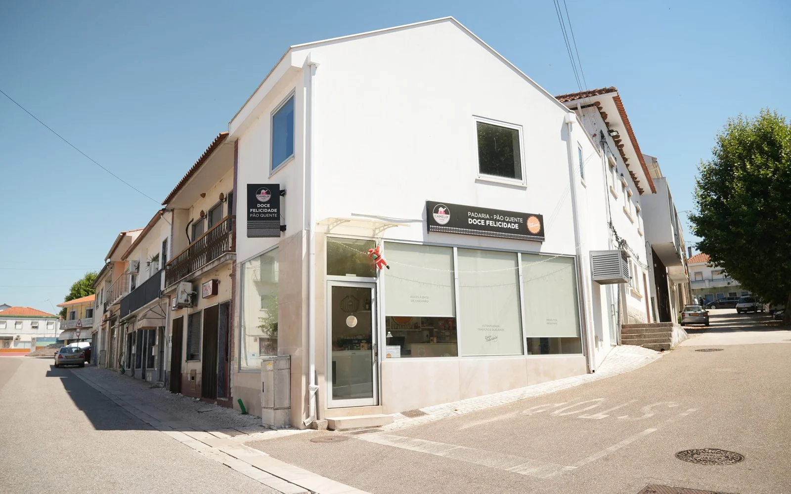
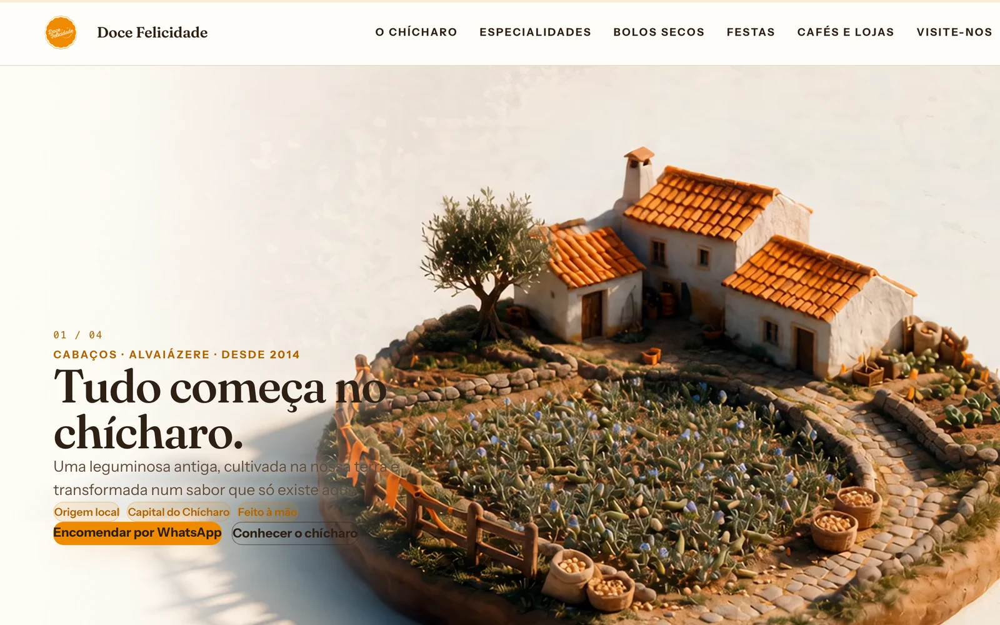

Apresentar
A identidade da casa, a ligação a Cabaços e as suas especialidades dão contexto a quem chega ao site.
Caso real · Cabaços, Alvaiázere
Da loja ao ecrã. Site e fotografia para apresentar a casa do pastel de chícharo e facilitar o contacto com quem quer conhecer ou encomendar os seus doces.
Um negócio com identidade própria
Produtos, história e informação prática reunidos numa presença online ligada à casa de Cabaços.
Ver o site
O trabalho
A Doce Felicidade produz doçaria artesanal em Cabaços, no concelho de Alvaiázere. O projeto junta site e fotografia para apresentar o negócio, dar a conhecer os produtos e tornar os contactos fáceis de encontrar.
O site reúne as especialidades da casa, informação sobre a loja e ligações para conversar e encomendar por WhatsApp.
Da casa ao contacto
A identidade da casa, a ligação a Cabaços e as suas especialidades dão contexto a quem chega ao site.
A fotografia da loja liga a presença online a um espaço real, reconhecível por quem o visita.
As ligações para WhatsApp permitem iniciar uma conversa sobre produtos, quantidades e encomendas.
Imagem do projeto
Uma captura de arquivo do site desenvolvido para a Doce Felicidade.

O seu negócio online